It’s easy to love Food Trucks; they’re convenient and offer more interesting (and affordable) gastronomic experiences than your average local chain restaurant. Yet, finding them in the noise of food apps out there can sometimes be a challenge. For this project, I was tasked with designing a better solution to not only help users find local vendors in their area, but add more value to the convenience of food truck dining by giving users the option to quickly order and pay via their iPhone.
Research and Discovery
Before I even thought about who my users were, I knew it was important to become a user myself for this project. Whenever I searched for food on the go, my typical platform choices had been limited to Google Maps and Yelp. Mobile ordering was also something I usually just accomplished by dialing another live human being (I know, old school, right?). So I began my exploration for a solution by testing out leading apps in the food search and ordering space. Yelp was an obvious choice, but I also analyzed GrubHub, Eat24 and Seamless along with niche apps from vendors like Dominos.
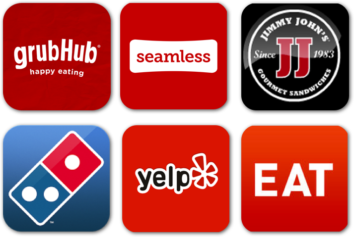This discovery phase initially helped me better understand how different apps approached the same user flows of searching, ordering and purchasing. While some apps provided a more aesthetically pleasing experience, I noticed that the successful, or at least most enjoyable apps, utilized a structured linear flow to get me from my initial search to making a decision about where to eat or what to buy; there were few places to get lost on the way there.
Getting to Know the User
Nevertheless, I have my own biases as a user with these apps. No matter how objective I was trying to be, I needed to step into the perspective of users who I was ultimately designing for. We all need to eat, but even with a food search app that doesn’t mean everyone fits into your target audience. For example, you’re more likely to find a food truck in a densely populated urban city compared to a suburban area. How do the demographic patterns of users compare between these two places? Erick and Morgan were my attempts to connect with the likely target users for the app.
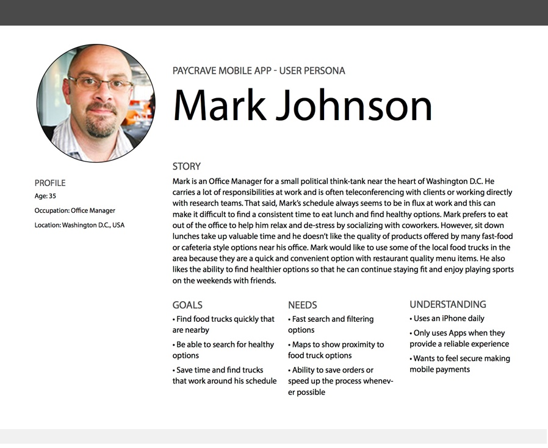 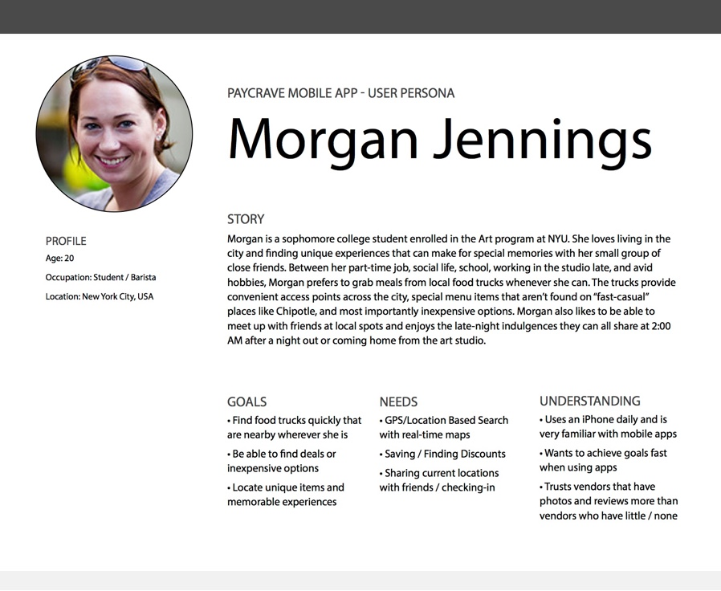I think writing user personas is a challenging process in itself. You’re not just looking at a list of goals this person has. You’re empathizing with their story and how that will affect the way they approach understanding and using this product. Although these personas are not perfect, they were invaluable in identifying core functions and ideas for each specific task that someone using Paycarve (the original brand for this project) would want to accomplish.
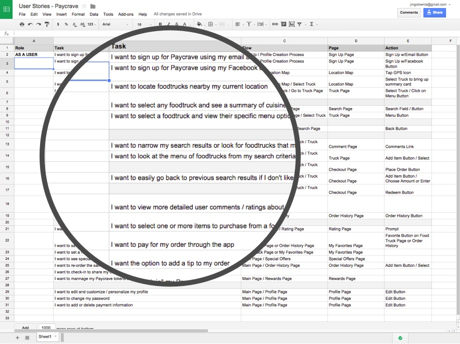After writing the original user stories I thought I had a solid foundation. I had a clear picture of who my users were and Paycrave covered everything my users could possibly need. That was the problem though.
By sketching just a few core user flows out of the 25 possible tasks I quickly realized the potential for “feature creep” and bloat. Sure, the customer reward system, check-in, and profile customization could make the app stand out, but in reality these features were not central to the primary goals of users. Maybe down the road these are features which could be developed for the app, but focusing on crafting the best experience for the most important tasks—finding food fast and easy ordering—would go a long way to differentiate this app from similar competitors.
Going back to the competitive analysis and carefully studying the user flows (even sketching quick wireframes of those flows) was also incredibly helpful in figuring out how to simplify the process of assisting users as they located and ordered from nearby trucks. At this point, I had the wireframe concepts in hand and the style guide for Paycrave. Yet, I still felt stuck in the process, hesitant to move forward.
Branding Paycrave Yumshark
What I really wanted to do was challenge myself to develop my own branding, style, and twist on the concept. I wanted to create a product that I could put in front of real users and have them react to it. If I had a different concept in mind for the brand, this not only affected the visual design, but also could have opened new possibilities for how the user interface and flows were designed. Since I had free reign and time to explore these possibilities, I turned my attention to the app’s identity.
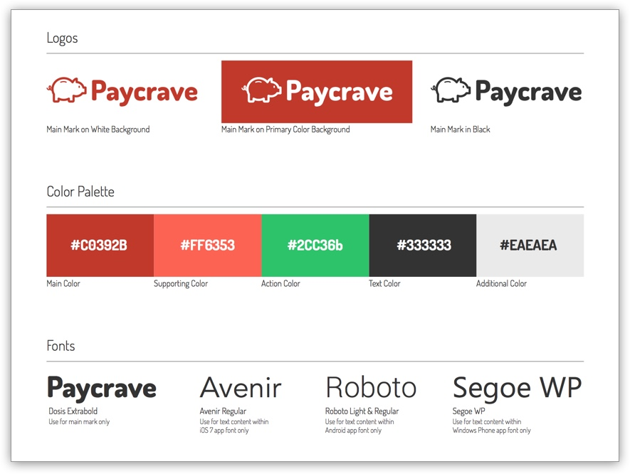The biggest difficulty was identifying a new name that was just as memorable in a sea of other popular food search apps.
The mark needed to convey speed; helping users make quick decisions when hungry.
The identity also needed to evoke a sense of fun and playfulness. Most food trucks have a unique personality in their own brand whether through clever puns (Hamborghini, Chairman Bao, Grillenium Falcon) or bold names such as “Baby’s Badass Burgers.” Fun is also synonymous with the inventive options, unexpected flavor combinations, and delicious finger food that these vendors offer.
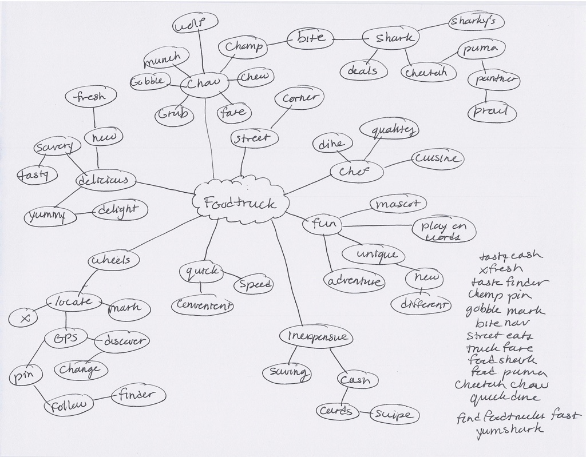“Yumshark” fit all of these characteristics.
When the inspiration struck, and the brand began to take shape, it seemed to unlocked the next iteration in the wireframing process.
Sample Yumshark User Flow – v.3
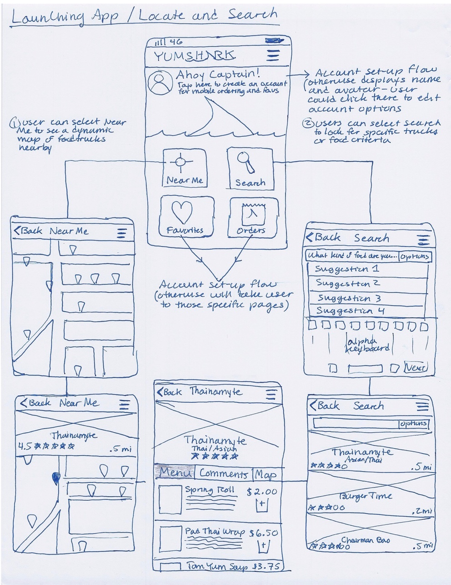Hi-Fi Prototyping
The user flow became focused and polished enough to fire up Sketch and create a hi-fi prototype. Yes, although a newcomer to the designer’s toolbox, I opted to use Bohemian Coding’s Sketch 3. Sure I could have stuck with my prefered tool Illustrator. I knew the software well and could create the prototype quickly. However, at this point the theme of this project became pushing myself out of the beloved comfort zone.
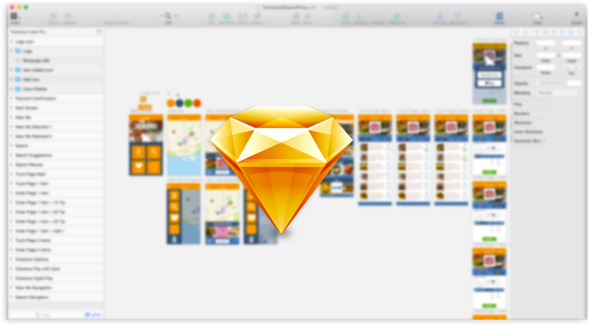I heard a lot of positive feedback from other designers who piloted sketch or completely switched to using it as part of their normal UI design workflow. Staying on schedule was initially a concern, but I was curious to experiment and see if using Sketch could speed up my workflow too.
I’ll save my full reflection on Sketch for another day, but I loved using it to create Yumshark. I was able to prototype just as quickly, if not faster, than using Illustrator despite the more lightweight nature of Sketch. In the end, I think you have to use a tool that you’re comfortable with and that best helps you accomplish the goals of a project. Nevertheless, it was a worthwhile experiment and I plan to use Sketch on future projects.
Creating the Apple Pay "Payment Sheet" inside Sketch – Mockup based on iOS Human Interface Guidelines
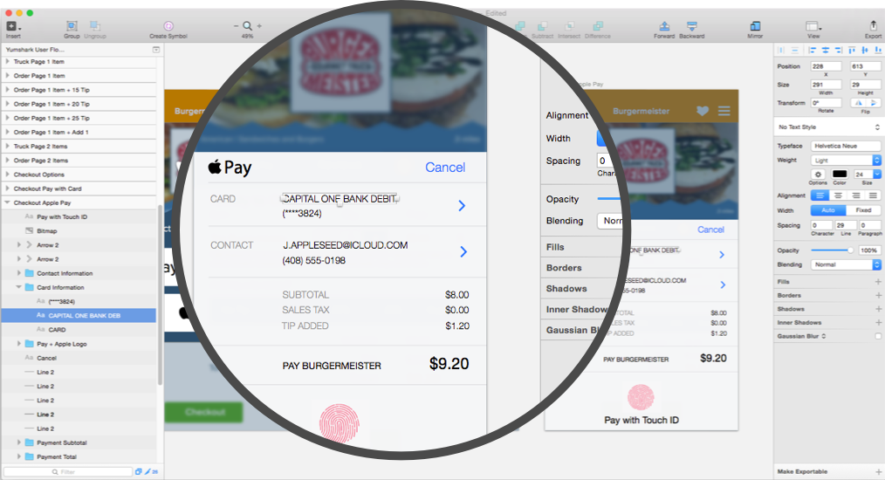Speaking of learning new tools, once the initial user flows were constructed in Sketch, I utilized Invision to create a working prototype.
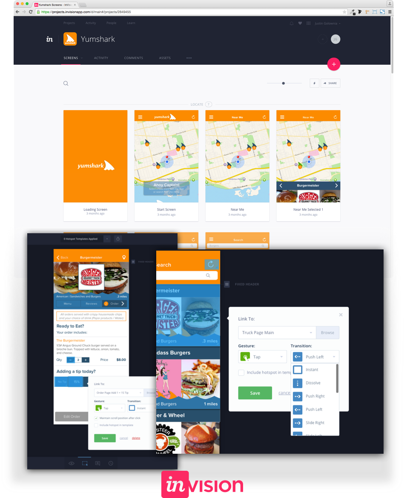It was truly awesome to see Yumshark in action as if it was completely coded behind the scenes. Once the appropriate animated transitions were added and hotspots linked together Yumshark Version 1.0 was finally ready for real user feedback.
Into the Wild
Wait, I actually have to put this thing in front of real people … and then see what they think about it? It’s impossible to eliminate all nervous energy when you’re asking for direct constructive feedback (especially from people who you know). But, opening up for those direct hits is the only way for you and the design to evolve and improve. Taking that first leap in the design research process was intimidating … and exhilarating. I could see my work and thought process affecting real users. The more people that I reached out to, the more exciting it became conducting research because each piece of feedback made Yumshark that much better (even if it was a little uncomfortable to hear at first).
I realize 12 user tests would not suffice in a real product launch. However, this was all about following the process and learning from the feedback that users provided, not quantity of data collection. That said, I gleaned many important insights from analyzing survey data and responses that users provided after testing Yumshark through InVision.
Users completed a survey via Google Forms that focused on gauging the following:
- Experience with user flows (searching, ordering, and payment)
- Navigation and Readability
- Perceptions of the app / brand
- Behaviors using food ordering apps
- Other open-ended feedback about their experience using Yumshark
Informed Iteration
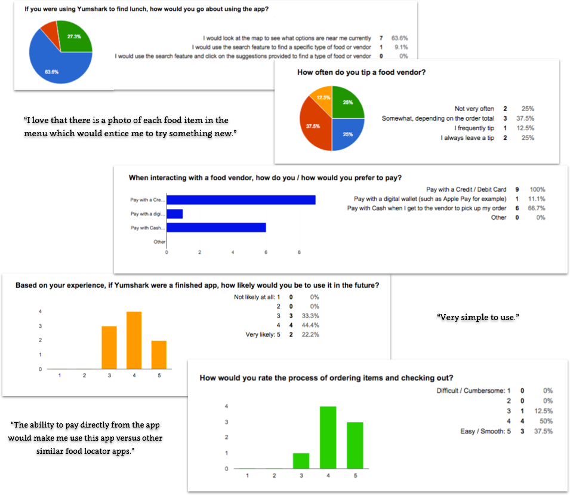In terms of positive feedback, it was amazing to see that at least half of all users were likely to use Yumshark in a future release based on their experience. Survey data and anecdotal feedback also demonstrated that it was easy for users to complete their primary goals: searching, viewing vendors, and ordering. The experience was pretty good out of the gate, but several important discoveries were revealed.
The payment flow, a critical component to Yumshark’s success, had to be reworked. First, research revealed that users were more likely to create a profile if this allowed them to save payment data for future use. There was less desire to create a profile to rate food vendors as originally hypothesized. Payment options at checkout was another pain point area for users. While it wasn’t a surprise that credit / debit cards were a popular choice, many users also preferred to have the option to pay with cash when asked in the survey.
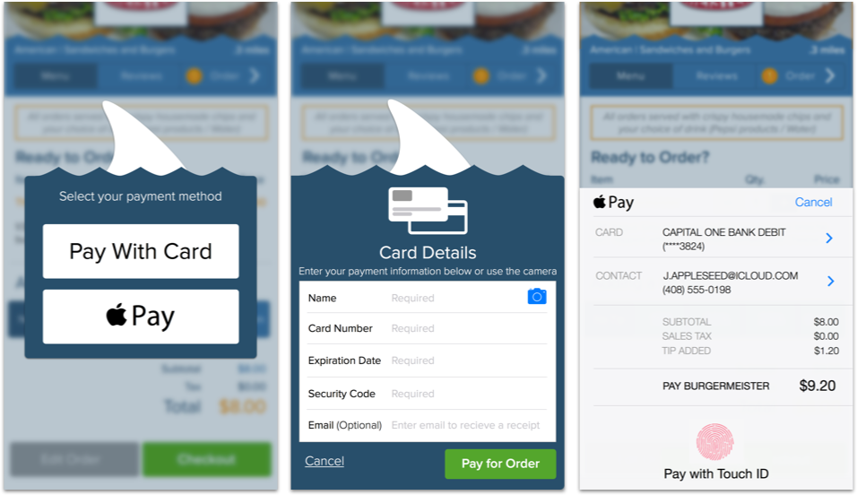 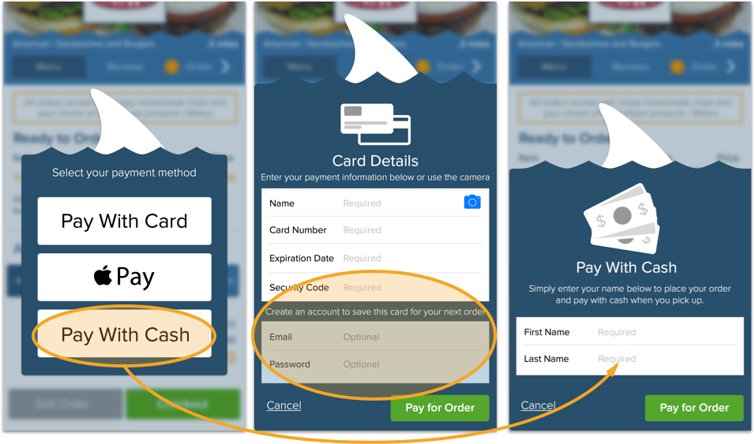User tests also helped to simplify the search flow from the beginning. The majority of participants opted to use the map primarily rather than dive into the search fields. Instead of making users jump through additional steps, the map replaced the start screen with clearer directions for how to get started.
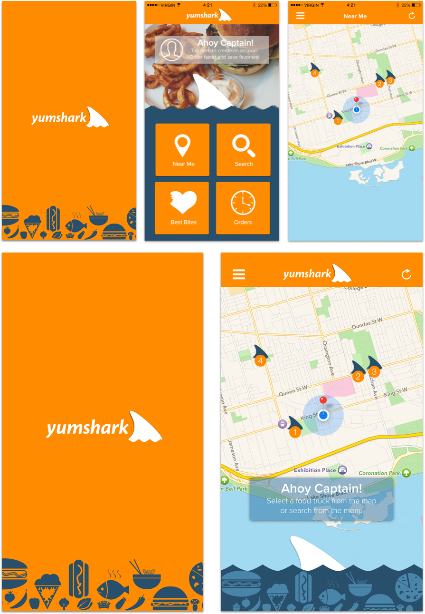Finally, whitespace and base font sizes were increased in the menu and ordering screens to improve readability and contrast.
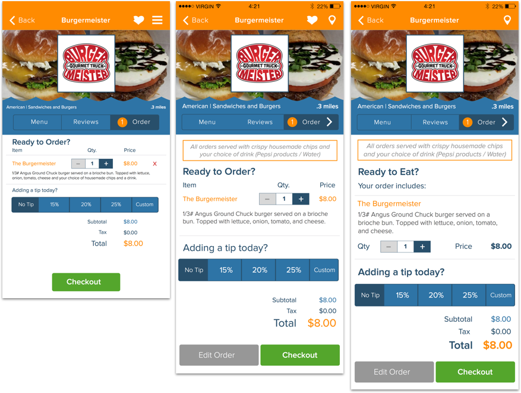Try the prototype below! This version includes all improvements that were made after taking user research feedback into consideration.
Lessons Learned
I’m proud of the work I accomplished with Yumshark. It was a lot of fun learning the nuances of designing for iOS and creating an exclusively mobile experience for users with my own twist. I think the biggest takeaway for me though was how much I grew by challenging myself to try new ideas and get uncomfortable in the process. From expanding my user research skills, to testing out new tools, to diving into the deep end of branding development, this experience has only strengthened that urge to jump into new challenges as a designer.
Thanks for reading about my process,
Justin
Get in Touch
What goals do you need to achieve with your next project? I’ll help you get there. Let's talk.